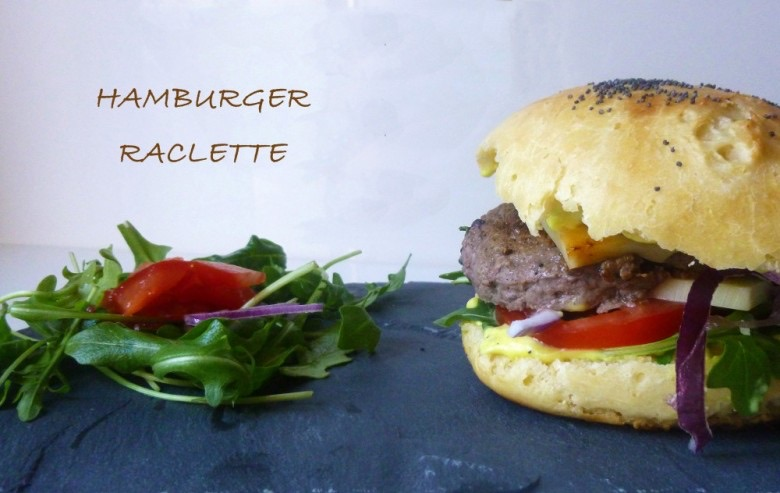

Hamburger Raclette

Après la recette du pain à hamburger maison il fallait que je vous parle de « THE » hamburger raclette. L’idée de comment m’est venue cette recette est vraiment toute bête. Après une soirée raclette ( bien arrosée) il me restait du fromage à raclette et il était impensable pour moi de le laisser pourrir au frigo. Mon chéri voulait (à tout prix) que je lui fasse des hamburgers mais j’avais envie de changer et d’en faire des nouveaux mais à quoi? … Le temps d’une douche est hop l’idée était là et le résultat fut une vraie tuerie!!!
Pour la petite histoire je ne sais pas si vous savez mais les hamburgers ne viennent pas des États Unis mais d’Allemagne et plus précisément d’Hambourg (merci wiki) et ils furent importés aux États Unis au milieu du XIXème siècle.
Trève de bavardages, je vous dévoile maintenant la recette de ce délicieux hamburger raclette !!
Ingrédients
- Pains hamburgers
- steack hachés 5% - 4 de 100-125g
- tomates - 2
- oignon rouge - 1
- fromage à raclette - 8
- roquette
- crème fraiche - environ 160g
- fromage à raclette - 4
Instructions
- Dans une casserole préparer la sauce : faire fondre le fromage à raclette coupé en morceaux dans la crème fraîche.
- Pendant ce temps coupez vos pains et faire cuire les steaks hachés
- Assaisonner la sauce puis tartiner les pains avec
- Déposer de la roquette , deux tranches de tomates, une tranche de fromage à raclette (facultatif) , le steak encore chaud , une deuxième tranche de fromage et de l'oignon rouge émincé
- Mettre dans le four 2-3 min a 180° histoire de bien faire fondre le fromage et ajouter le chapeau en fin de cuisson

Les tips de la communauté
Burger gourmand et réconfortant, clairement calorique mais apprécié pour son aspect comfort food. Incite les lecteurs à expérimenter d'autres recettes de burgers.